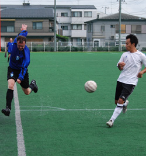
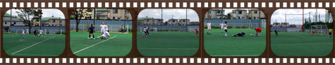
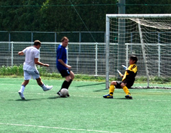
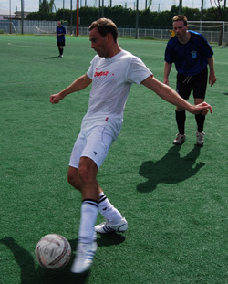
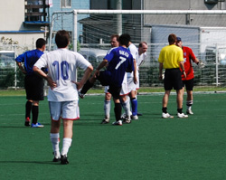

|
Hachioji Park, Saturday 20th September
Typhoon number 13 had blown through several hours before kickoff, but there was still plenty of wind howling through aging lungs as the Albion Old Boys huffed and puffed their way to a 4-all draw with BFC Vagabonds in a hard-fought encounter at Hachioji Park.

Though a few of them had to be dragged kicking and screaming out of the relative comfort of Division 3, an impressive number of Seasoned Maestros Of The Beautiful Game had dodged the trip to the glue factory and reported back for the Old Boys' Division 2 debut. Pre-match conversations were pretty much par for the course these days. Samples:
"Is that a steel pin you've had put through that knee?
"Titanium actually..."
Or:
"How's the new hip holding up?"
"Pretty good so far. If it works out as well as yours did, it'll do nicely."
Or:
"You never used to wear a reinforced graphite jock-strap, did you?"
"Never used to have a prolapsed prostate, did I?"
Or:
"I thought those breast implants were supposed to be for your missus"
But soon it was time to put away the chat and get out onto the mat, the massive, rain-sodden astroturf carpet of Hachioji Park. After some fairly unmemorable opening exchanges Albion took an earlyish lead when a Vagabonds defender, under severe pressure from George Pele Clarkson, looped a clearing header over his keeper and into the net. The lead was doubled a few minutes later when Albion's Hitoshi Ono was brought down in the box, Mick O'Hagan dispatching the penalty with his usual aplomb in his usual fashion (NOTE TO ALL DIVISION 2 CUSTODIANS - HE ALWAYS HITS THEM LOW TO THE KEEPER'S RIGHT, BUT NOT VERY HARD AND NEVER RIGHT IN THE CORNER).


Vagabonds were rightly pissed off to find themselves two goals down against a team that were hardly bossing the game, and it didn't take them long to reply with a well-taken goal - nice through ball, great turn of pace, clinical finish - that gave Old Boy's keeper Kouka no chance. But they were soon facing another two-goal deficit as Albion showed that Route 1 football can have its place in the Beautiful Game. Kouka, whose kicking both from ground and from hand was immaculate all game, picked out George from among the line of defenders inside the Vagabonds half. The veteran centre-forward saw Hitoshi running past him down the left touchline and flicked the header on right into his path. Hitoshi still had loads to do but he outpaced his full back, cut inside from the by-line, took it round the keeper and tapped home. Then waved frantically for a sub so he could get his breath back. 3-1 at half-time to the Menopausal Maestros.

Vagabonds came out for the second half pumped up and ready for a fight back; the Old Boys came out slumped down and ready for a nice nap. One half will do quite nicely for today, thank you. Unfortunately the Vagabonds didn't see it that way, and immediately had us under the cosh worse than the Kray gang on a granny-bashing spree. I have no recollection of the Vags 2nd goal because like all my fellow Old Boys I was sleepwalking around our penalty area like a zombie on an overdose of horse tranquilizers, but their equalizer I do remember, because having arrived far too late to close down the right wing cross I had nothing else to do but watch the Vags centre forward rise high at the far post to head home a well-crafted goal. The one-way traffic continued as the Vagabonds used their youth and superior fitness to make the midfield of that vast pitch feel like a very crowded place, and Albion made things worse for themselves with some dire pass selection and even direr execution. Yet the Vagabonds' go-ahead goal, though well-deserved, had a touch of good fortune about it as a defender's goal line clearance ricocheted off the keeper's back and into the net.
So the Old Boys were now chasing the game, and fair play to them, they did give it a good chase, especially in the last ten minutes when the Vagabonds finally started to tire and the Albion managed to put a bit of pressure on by winning a few free kicks and corners. Now...

....like many other students of the recent YCAC-Sala match report, I was a bit out of my depth reading Professor Stephen Tawking's observations on quarks and black holes. My familiarity with the laws of physics goes no farther than the knowledge that you can stop a badly-poured beer from overflowing the glass by sticking your finger on the foam. In fact until quite recently I thought the Theory of Relativity was an attempt to explain why Irish families like mine had so many uncles and cousins - something to do with ripples in the space-time continuum over County Mayo. But the scene in the Vagabonds six-yard box in a the final minutes of the game gave me a much more realistic understanding of what life must be like for the average sub-atomic particle in the CERN Hadron Collider, as following a well-delivered Albion corner the much-abused ball was sent whizzing around for several seconds at geometry-defying angles and near-light speed before being deflected over the goal line by a stray neutrino somewhere in the vicinity of Tel's left hip - an equalizer that would cause some head-scratching among not only the physicists, but also the gerontologists, who would be keen to know how this bunch of knackered and heavy-legged geezers managed to fight their way back for an unlikely point.
So honours even at the end of a very well-contested game. For the Old Boys it was great to have Rod Cramblit and James Moon back in action after lengthy absences, and new keeper Nobu Kouka had an excellent game. If the Vagabonds are representative of the level of Division 2 then those Old Boys who were looking for lots of pipe-and slippers games are going to be disappointed, but for those of us who still relish a battle the coming season should be a lot of fun.
Match report by Terry Cooney
|